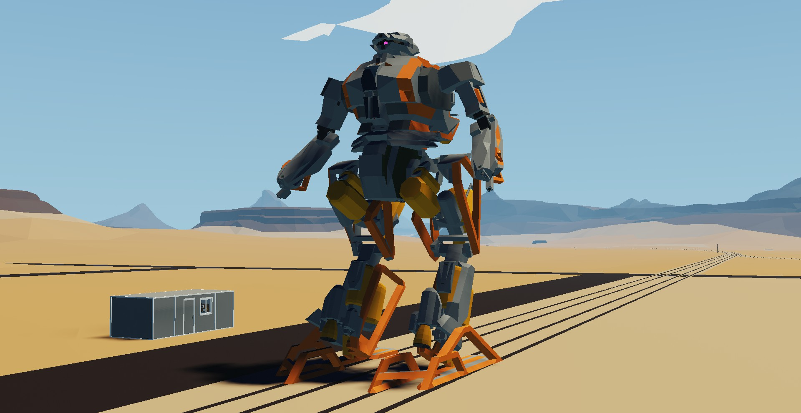
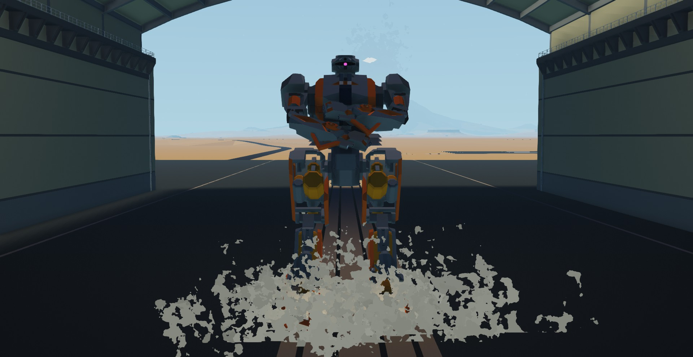
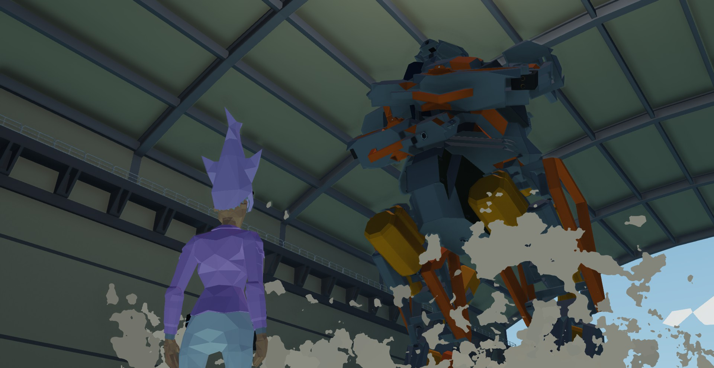
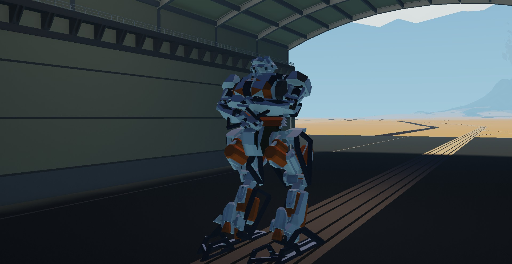
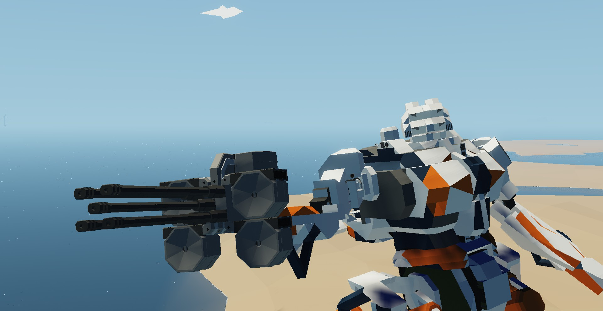
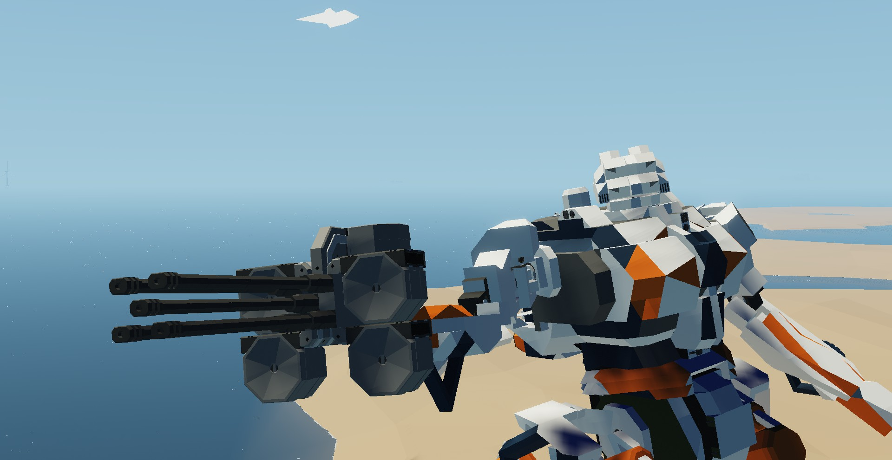

SAGAN - 量産型人型機



基本仕様
- 全長: 約17m
- 分類: 量産型人型機
- プラットフォーム: Stormworks
- 開発者: Myano-san
主要特徴
操縦補助システム
ヘリ程度の難易度で操縦が可能
武装コントローラー
残弾や武装種別が一目でわかる
腕部制御システム
直感的なアクチュエーター制御
拡張性
高い拡張性を持つ構造設計
センサーシステム
冗長なセンサー系による安定性
技術詳細
操縦システム
高度な操縦補助システムにより、複雑な人型機の操縦をヘリコプター程度の難易度に簡略化。初心者でも直感的に操作することが可能です。
武装管理
統合武装コントローラーにより、各種武装の残弾数、種類、状態を一元管理。戦闘中でも迅速な状況判断が可能です。
アクチュエーター制御
腕部アクチュエーターの直感制御システムにより、精密な作業から戦闘まで幅広い用途に対応。照準合わせも簡単に行えます。
SAGAN PLUS - 高機能型人型機

 

強化仕様
- 全長: 約17m
- 分類: 高機能型人型機
- プラットフォーム: Stormworks
- ベース機体: SAGAN
PLUS専用機能
高機動スラスター
大幅に向上した機動性能
高精細大型モニター
詳細な情報表示システム
半自律システム
開発中の無人攻撃機システム
強化装甲
より高い防御性能
先進技術
高機動システム
新開発の高機動スラスターシステムにより、従来機を遥かに上回る機動性を実現。三次元戦闘における優位性を確保します。
情報統合システム
高精細大型モニターによる統合情報表示システム。戦場情報から機体状態まで、あらゆる情報を一元化して表示します。
半自律制御
開発中の半自律無人攻撃機システムを将来的に搭載予定。人間の判断と機械の精密性を融合した次世代戦闘システムです。
開発状況
基本システム
高機動スラスター
大型モニター
半自律システム